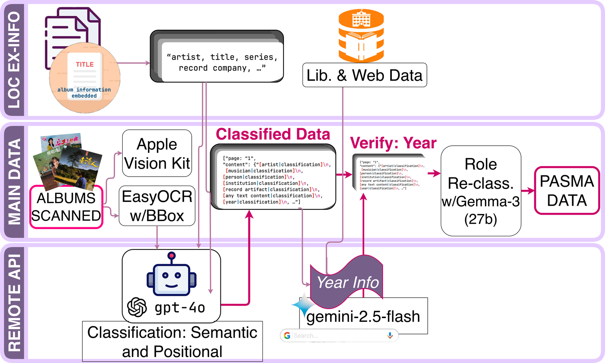
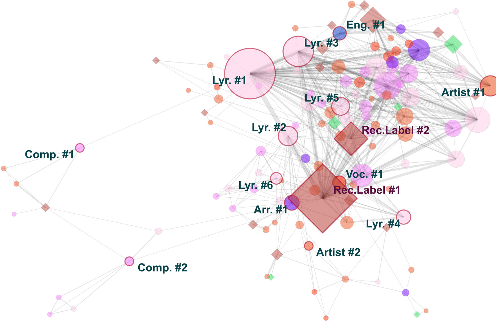
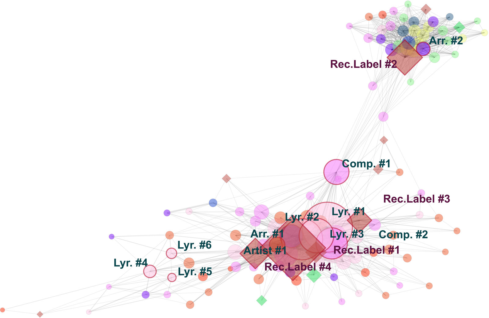
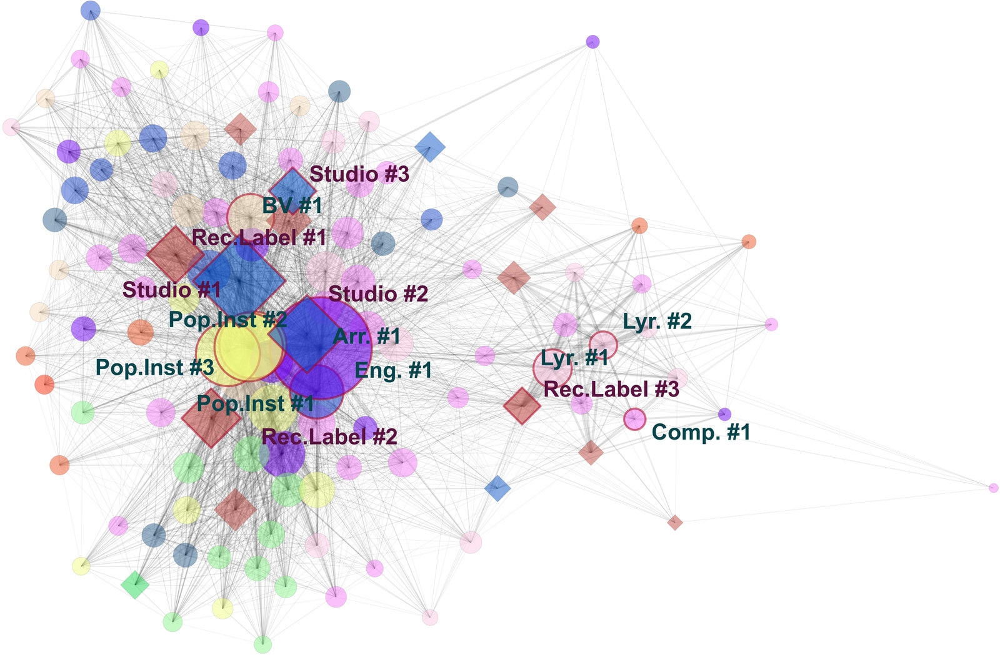
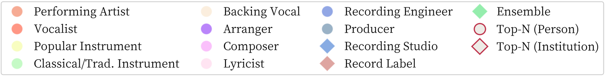
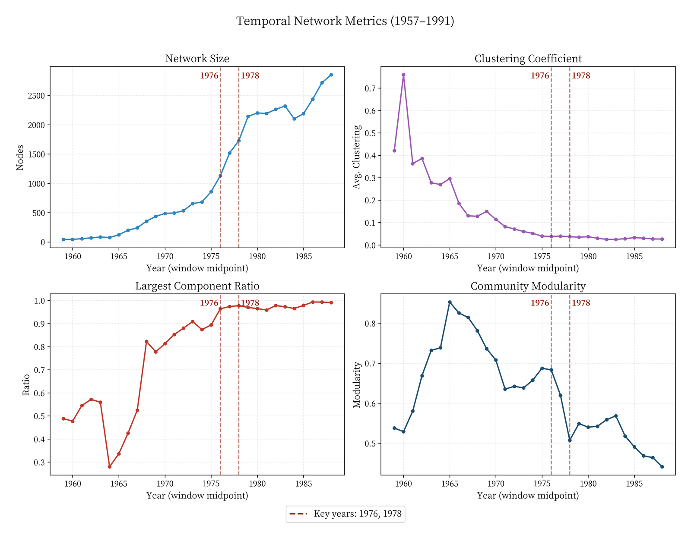
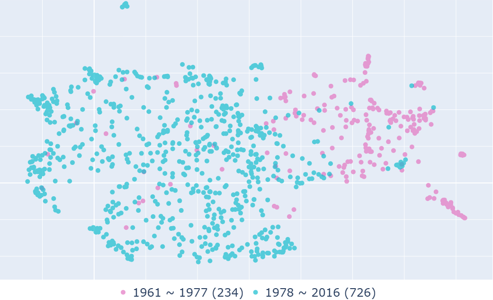
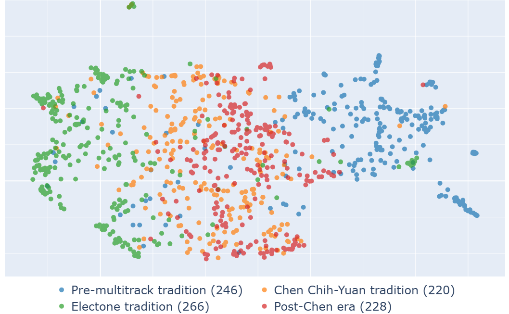
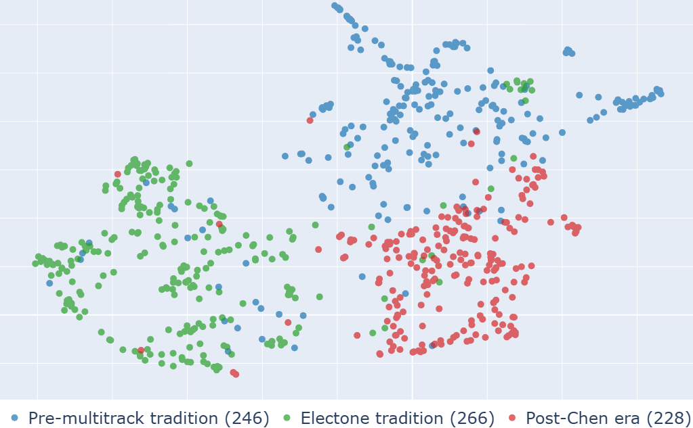

The Paper
Ming Cheng, Yung-Chuan Chang, Chien-Chang Yang and Li Su. Digital Existence as Ontological Intervention: Backstage Networks in Postwar Taiwanese Popular Music. Proceedings of the 27th International Society for Music Information Retrieval Conference (ISMIR 2026), Abu Dhabi, 8–12 November 2026. Best Paper nominee.
Abstract
The historical narrative of popular music privileges front-stage stars, and music information retrieval (MIR) has largely reproduced this bias. Backstage laborers, arrangers, session musicians, engineers, remain absent from the field's datasets and research questions. Responding to Born's (2020) call for a critical MIR 1, we argue that encoding historically marginalized music workers into computational databases constitutes an ontological intervention that grants them digital existence in an era where absence from metadata means erasure from history. We introduce the Private Archive of Scanned Music Artifacts (PASMA), a dataset reconstructed by an LLM pipeline from 1,122 Taiwanese vinyl liner notes spanning 1957–1991, and combine Social Network Analysis with MERT embeddings on vocal-separated stems. The collaboration network transformed sharply around 1978, when multitrack recording shifted it from a fragmented, high-modularity ecology to a centralized giant component bridged by elite intermediaries. MERT embeddings indicate that the arrangement traditions defined by these network communities occupy distinct regions in acoustic space. These findings demonstrate that MIR's computational tools, redirected toward the backstage, can decode historical power structures and restore the visibility of the laborers who built the soundscapes of postwar Taiwan.
The dataset in one figure

See the Dataset page for the sources, the role taxonomy and the validation procedure.
The network turned around 1978
Credits are projected into a collaboration network: two persons share an edge if they are credited on the same album, weighted by the number of shared albums. Circles are persons, diamonds institutions; colour is role. Each panel is cumulative from 1957.




Three structural metrics, computed on 5-year sliding windows, turn together in the same window:
- the average clustering coefficient 2 falls from 0.75 (1960) to below 0.05 after 1978;
- the largest connected component crosses 0.95 of all actors around 1976 and stays there;
- Louvain modularity 3 drops from 0.69 (early 1970s) to 0.51 (1980).

Who bridges the network changed
Role enrichment among the top 30 bridging actors (lowest Burt constraint 4) across the three cumulative periods. Values above 1 mean the role is over-represented among the bridges; “—” means absent from the top 30.
| Role | ’57–’76 / ’57–’78 / ’57–’91 |
|---|---|
| Recording engineer | 5.83 / 5.00 / 1.57 |
| Producer | — / 3.33 / — |
| Backing vocal | — / — / 4.01 |
| Pop instrumentalist | — / 3.16 / 1.89 |
| Arranger | 0.83 / 2.78 / 3.06 |
| Composer | 1.37 / 1.06 / 1.58 |
| Lyricist | 1.63 / 0.69 / 0.53 |
| Vocalist | 0.32 / 0.31 / — |
| Performing artist | 0.61 / — / — |
Lyricists and singers fall below parity; arrangers, players, backing vocalists and engineers take the bridges. Singing stars were never the connective tissue of this industry. The single strongest bridge across the whole period is the arranger Chen Chih-Yuan 陳志遠, credited on 178 albums and connected to 338 collaborators, with the lowest constraint score in the network (0.027 against 0.030 for the second-ranked actor). His career is told on the Historical Context page.
The sound follows the structure
Because PASMA does not include the recordings, we assembled a separate corpus of 960 recordings (1961–2016), removed the vocals with Hybrid Demucs 5, embedded the instrumental stems with MERT-330M 6 and projected the embeddings with UMAP 7. MERT was given no dates. No audio is redistributed.



The four arrangement traditions, and what they correspond to historically, are described in Historical Context, Section 6.
Why it matters
Encoding these workers into a database is an ontological intervention in the sense that it gives them a digital existence they never had. The claim rests on Born's critique of MIR's institutional assumptions 1 and on the Social Construction of Technology 8: the adoption and standardization of multitrack recording in late-1970s Taiwan was not a neutral upgrade but a reorganization of who could participate in production. If MIR is to diversify its objects and its methods, it must ask not only what algorithms can optimize, but what histories they can restore.
Three-minute video
Narration synthesized with Kokoro TTS from the authors' script; subtitles available as SRT.
How to cite
@inproceedings{cheng2026pasma,
author = {Cheng, Ming and Chang, Yung-Chuan and Yang, Chien-Chang and Su, Li},
title = {Digital Existence as Ontological Intervention: Backstage Networks in Postwar {Taiwanese} Popular Music},
booktitle = {Proceedings of the 27th International Society for Music Information Retrieval Conference (ISMIR)},
address = {Abu Dhabi, United Arab Emirates},
year = {2026}
}
To cite the dataset, cite the paper and add “PASMA (Private Archive of Scanned Music Artifacts), https://bkwmt.github.io/PASMA/”.
Erratum
Section 4.2 of the camera-ready paper gives Chen Chih-Yuan's dates as 1941–2011. His dates are 1950–2011 (Taipei Music Center, Taiwan Popular Music Database; Cheng 2026). The error does not affect any result.
Acknowledgments
This work was supported by the Academia Sinica project “Innovative Applications of AI in Humanities and Sciences” (No. AS-IAIA-114-M06). We are deeply grateful to Pei-Ju Lin, founder of the Taipei music space Sounds Good, for generously providing scanned images of her private vinyl collection, without which the construction of PASMA would not have been possible.
References
- Born, Georgina (2020). Diversifying MIR: Knowledge and Real-World Challenges, and New Interdisciplinary Futures. Transactions of the International Society for Music Information Retrieval 3(1): 193–204.
- Watts, Duncan J. and Strogatz, Steven H. (1998). Collective Dynamics of ‘Small-World' Networks. Nature 393(6684): 440–442.
- Blondel, Vincent D., Guillaume, Jean-Loup, Lambiotte, Renaud and Lefebvre, Etienne (2008). Fast Unfolding of Communities in Large Networks. Journal of Statistical Mechanics: Theory and Experiment 2008(10): P10008.
- Burt, Ronald S. (1992). Structural Holes: The Social Structure of Competition. Cambridge, MA: Harvard University Press.
- Defossez, Alexandre (2022). Hybrid Spectrogram and Waveform Source Separation. arXiv preprint arXiv:2111.03600. https://arxiv.org/abs/2111.03600
- Li, Yizhi, Yuan, Ruibin, Zhang, Ge, Ma, Yinghao, Chen, Xingran, Yin, Hanzhi, Xiao, Chenghao, Lin, Chenghua, Ragni, Anton, Benetos, Emmanouil, Gyenge, Norbert, Dannenberg, Roger, Liu, Ruibo, Chen, Wenhu, Xia, Gus, Shi, Yemin, Huang, Wenhao, Wang, Zili, Guo, Yike and Fu, Jie (2024). MERT: Acoustic Music Understanding Model with Large-Scale Self-supervised Training. In Proceedings of the International Conference on Learning Representations (ICLR).
- McInnes, Leland, Healy, John and Melville, James (2018). UMAP: Uniform Manifold Approximation and Projection for Dimension Reduction. arXiv preprint arXiv:1802.03426.
- Pinch, Trevor and Bijker, Wiebe (1984). The Social Construction of Facts and Artefacts: Or How the Sociology of Science and the Sociology of Technology Might Benefit Each Other. Social Studies of Science 14(3): 399–441.